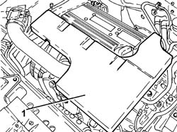
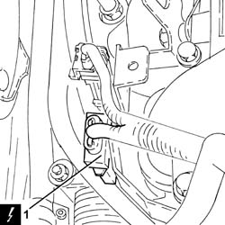
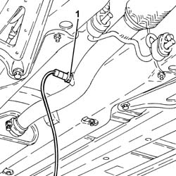
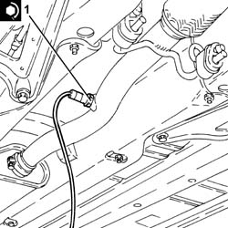
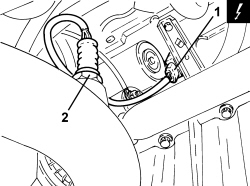

1080B95 REAR LAMBDA SENSOR TO CATALYTIC CONVERTER - R.R
- Path
- Procedures > 10 ENGINE > 1080 EMISSION CONTROL SYSTEM > 1080B EXHAUST EMISSION CONTROL SYSTEM > 1080B95 REAR LAMBDA SENSOR TO CATALYTIC CONVERTER - R.R
- Kind
- repair procedure (removal / refitting; the operation number is the code)
- Applies to
- engines: 1.8, 2.2; all production periods
- Interactive page
- https://sloeber94.github.io/elrnDB-fCrm/en/#/194000370
Applies to: engines: 2.2; all production periods
 Removing
Removing
 Refitting
Refitting- Position the vehicle on a lift.
- Make sure that the ignition key is in the OFF position, then disconnect the battery terminal (-).
Description | Connector | |
|---|---|---|
- | Battery |
1. Remove the soundproof cover secured to the engine by three pins.

Applies to: engines: 2.2; all production periods
1. Disconnect the electrical connection for the rear Lambda sensor to the catalytic converter.
Description | Connector | |
|---|---|---|
1 | Lambda sensor on catalyzer - 2 |

Applies to: engines: 2.2; all production periods
- Release the electrical wiring for the rear Lambda sensor to the catalytic converter from the fastenings.
1. Unscrew and remove the rear lambda sensor from the catalytic converter.

Applies to: engines: 2.2; all production periods
Refitting
Removing1. Position the rear lambda sensor in its housing on the catalytic converter and tighten it to the recommended torque.
Component | Fastening | dia | Value (daNm) | Validity |
|---|---|---|---|---|
Rear Lambda sensor to catalytic converter | - (with special black grease) | M18 x 1.5 | (exhaust pipe side) 4.0 | 2.2 |

Applies to: engines: 2.2; all production periods
- Secure the electrical wiring for the rear Lambda sensor to the catalytic converter using the fastenings.
- Connect the electrical connection for the rear Lambda sensor to the catalytic converter.
- Refit the soundproofing cover in its seat and secure to the engine with the three pins.
- Connect the negative battery terminal.
- Remove the vehicle from the lift.
Applies to: engines: 1.8; all production periods
Removing
Refitting- Position the vehicle on a lift.
Op. 7055B54 UNDER ENGINE PROTECTION/GUARD - R.R.
1. Disconnect the electrical connection for the rear Lambda sensor to the catalytic converter.
Description | Connector | |
|---|---|---|
1 | Lambda sensor on catalyzer 2 |
2. Unscrew and remove the rear Lambda sensor from the catalytic converter.

Applies to: engines: 1.8; all production periods
Refitting
Removing- Refit the rear Lambda sensor in its housing on the catalytic converter and tighten it to the recommended torque.
Component | Fastening | dia | Value (daNm) | Validity |
|---|---|---|---|---|
Rear Lambda sensor to catalytic converter | - | M18 | 3.5 ÷ 4.5 | 1.8 |
- Connect the electrical connection for the rear Lambda sensor to the catalytic converter.
Op. 7055B54 UNDER ENGINE PROTECTION/GUARD - R.R.
- Remove the vehicle from the lift.
Topics linked from this page (3)
Topics that link to this page (13)
- W01 HIGH CO EMISSIONS
- W02 CO EMISSIONS LOW, NOX EMISSIONS HIGH
- 1004B10 POWER UNIT WITH MANUAL GEARBOX - R.R
- 1004B14 POWER UNIT WITH AUTOMATIC TRANSMISSION R + R
- 1020D26 FLYWHEEL SIDE OIL SEAL COVER - R.R AND REPLACE GASKETS
- 1020D38 FLYWHEEL SIDE OIL SEAL - REPLACE
- 1024B10 ENGINE FLYWHEEL - R + R FOR VERSIONS WITH MANUAL GEARBOX
- 1076B10 EXHAUST PIPE ASSEMBLY - R + R
- 1076B18 RIGID SECTION OF EXHAUST PIPE BETWEEN CATALYTIC CONVERTER AND SILENCER - R + R
- 1810A20 CLUTCH - R + R
- 1820B30 CLUTCH HYDRAULIC ACTUATOR - R.R.
- 2110A10 MANUAL GEARBOX AND DIFFERENTIAL - R + R
- 4410D10 FRONT SUSPENSION FRAME - R+R